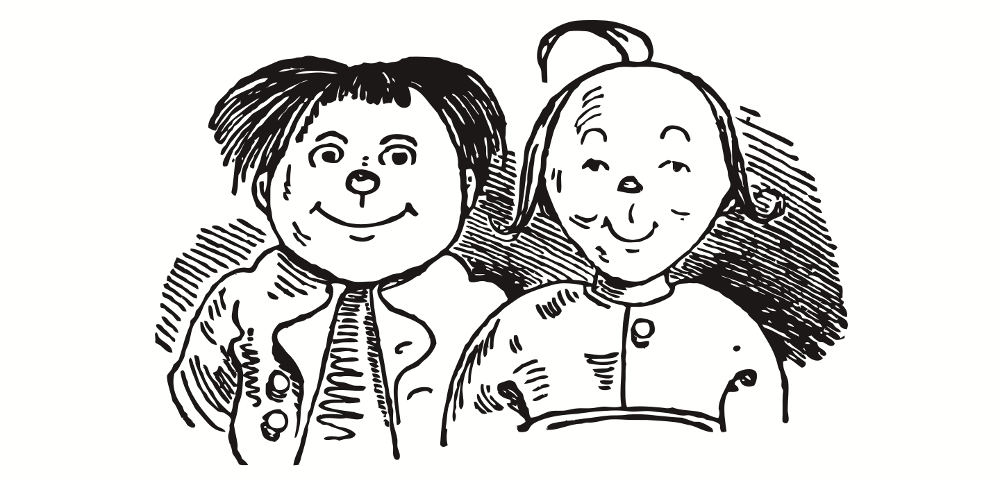

Max und Moritz
Eine Bubengeschichte in sieben Streichen
Please also checkout the print layout!

Max und Moritz machten beide,
Als sie lebten, keinem Freude:
Bildlich siehst du jetzt die Possen,
Die in Wirklichkeit verdrossen,
Mit behaglichem Gekicher,
Weil du selbst vor ihnen sicher.
Aber das bedenke stets:
Wie man’s treibt, mein Kind, so geht’s.
Vorwort
Kindern hören oder lesen!
Wie zum Beispiel hier von diesen,
Die, anstatt durch weise Lehren
Sich zum Guten zu bekehren,
Oftmals noch darüber lachten
Und sich heimlich lustig machten.
Ja, zur Übeltätigkeit,
Ja, dazu ist man bereit!
Menschen necken, Tiere quälen,
Äpfel, Birnen, Zwetschen stehlen
Das ist freilich angenehmer
Und dazu auch viel bequemer,
Als in Kirche oder Schule
Festzusitzen auf dem Stuhle.